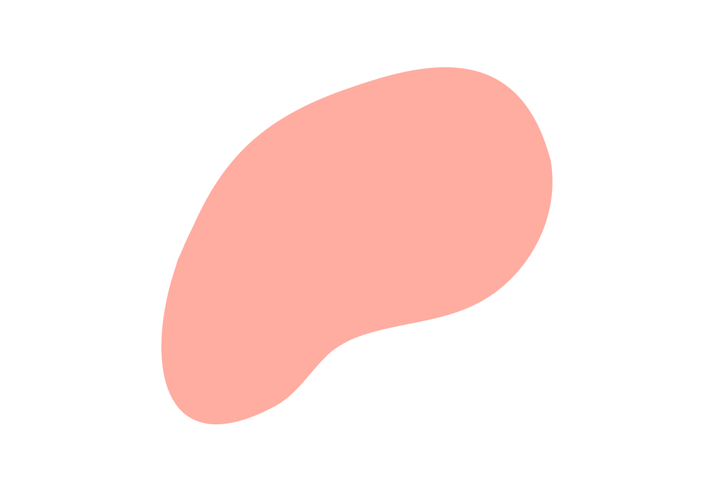

As a founder of thermal storage systems she earned herself the nickname of “The Sun Queen”. Maria also designed the first cheap and easily operated oven that could heat using solar power; ideal and cheap enough for use by villagers in poor arid areas around the world.
Until the end of her career, Maria continued to develop solar-energy applications, earning more than 20 patents over the course of her career. She also achieved many awards, becoming the first recipient of the Society of Women Engineers Achievement Award, and a lifetime achievement award from the National Academy of Sciences Building Research Advisory Board for her contributions to solar-heated building technology.
In the 1940s she teamed up with architect Eleanor Raymond to build the first solar-heated house. The oil crisis of the 1970s spurred a great deal of interest in solar energy, which led to the construction of a second solar-heated house.
Born in Budapest, Hungary, Maria moved to the US and began solar energy research at the Massachusetts Institute of Technology. She was a prolific inventor of thermal devices including a miniature desalination unit; developed for the Navy in WW2 and which saved the lives of torpedoed sailors and downed airmen.